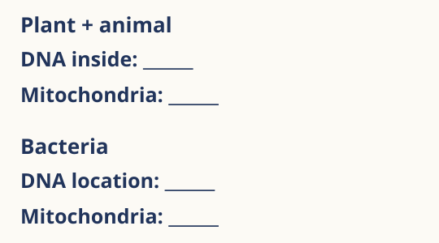
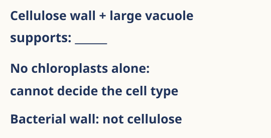
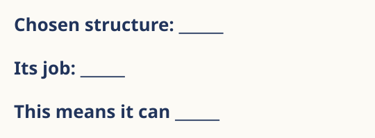

Support cards
Attempt first. Use the support your response shows you need. Keep usual access. Close content prompts for fresh checks.
Shared structures
Complete the two blanks in each box. Put “nucleus” outside the all-three group.
Different recheck: Compare all three cell types using ribosomes, DNA and nucleus.
Try without the scaffold. Keep your usual access.
Model answer and criteria · after your attempt
Model response Ribosomes and DNA complete all three boxes. A nucleus is not shared by all three: bacteria have DNA without a nucleus.
Model response All three have ribosomes and DNA. Generalised plant and animal cells have a nucleus; typical bacteria do not.
Success criteria Four shared components correct. · Nucleus excluded from all-three group.
Success criteria All three share ribosomes and DNA. · Nucleus comparison correct.
DNA and mitochondria

Complete both sides; compare one feature at a time.
Different recheck: Compare a generalised root cell and a typical bacterium using DNA location and mitochondria.
Try without the scaffold. Keep your usual access.
Model answer and criteria · after your attempt
Model response Plant and animal: DNA inside nucleus; mitochondria present. Bacteria: DNA free in cytoplasm, not enclosed in nucleus; mitochondria absent.
Model response Root-cell DNA is enclosed in a nucleus and mitochondria are present. Bacterial DNA is free in cytoplasm and mitochondria are absent.
Success criteria Both DNA locations. · Both mitochondria claims.
Success criteria Both cells paired on DNA location. · Both cells paired on mitochondria.
Plant evidence

Complete the blank. Compare a plant wall with a bacterial wall.
Different recheck: A root cell has no chloroplasts. Explain why this does not make it animal. Compare its wall with a typical bacterial wall.
Try without the scaffold. Keep your usual access.
Model answer and criteria · after your attempt
Model response Cellulose wall and large permanent vacuole support plant identity in this generalised comparison. Typical bacterial walls are not cellulose. Chloroplast absence alone cannot identify an animal cell.
Model response Root cells need not photosynthesise, so can lack chloroplasts. A root-cell wall is cellulose; the typical bacterial wall is not cellulose.
Success criteria Positive plant evidence. · Wall composition differs. · Avoid chloroplast-only rule.
Success criteria Qualified chloroplast claim. · Both wall compositions.
Compare and justify
However, ___ whereas ___.
This evidence supports ___ because ___.
Different recheck: Compare an animal skin cell and a generalised photosynthetic leaf cell: one shared structure and one difference.
Try without the scaffold. Keep your usual access.
Model answer and criteria · after your attempt
Model response Example: both plant and animal cells have mitochondria. However, a typical plant cell has a cellulose wall whereas an animal cell has no wall. A cellulose wall supports plant identity in the stated comparison.
Model response Both contain nuclei/mitochondria (or membrane, cytoplasm, ribosomes, DNA). A photosynthetic leaf cell has chloroplasts/cellulose wall/large permanent vacuole whereas the animal cell lacks these plant features.
Success criteria Scientifically accurate paired claims. · Evidence supports the conclusion.
Success criteria One correct shared component. · One explicitly paired difference.
Structure and job

Use the reference for only the link you missed. Fill the frame, close the reference, then try the different recheck.
Different recheck: New order: identify the animal structure that makes proteins; bacterial structure that strengthens; animal site of aerobic respiration; bacterial site of most reactions; bacterial carrier of genes and its location.
Try without the scaffold. Keep your usual access.
Model answer and criteria · after your attempt
Model response Membrane controls entry and exit; wall strengthens; cytoplasm is where most reactions happen; chromosome carries genes; mitochondrion is the site of aerobic respiration, releasing/transferring usable energy; ribosome makes proteins.
Model response Ribosome; wall; mitochondrion; cytoplasm; chromosome/DNA free in cytoplasm, not enclosed in a nucleus.
Success criteria Matches the particular structure to its job. · No energy creation claim.
Success criteria Five identification links. · Chromosome has genes and is free in bacterial cytoplasm.